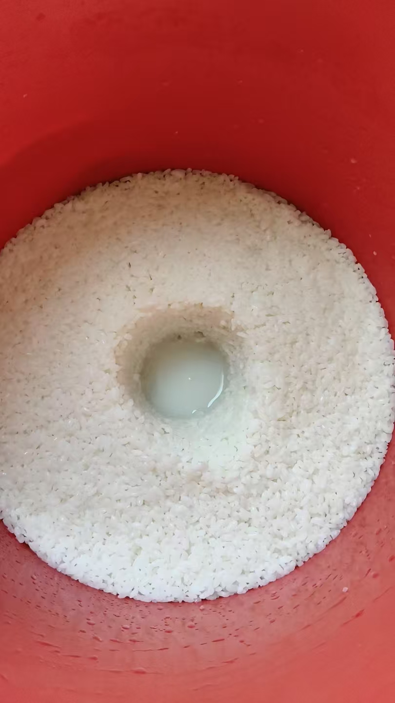
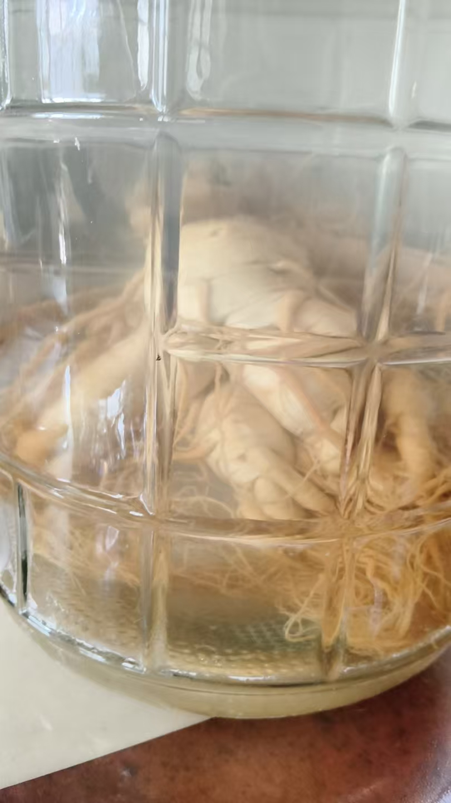
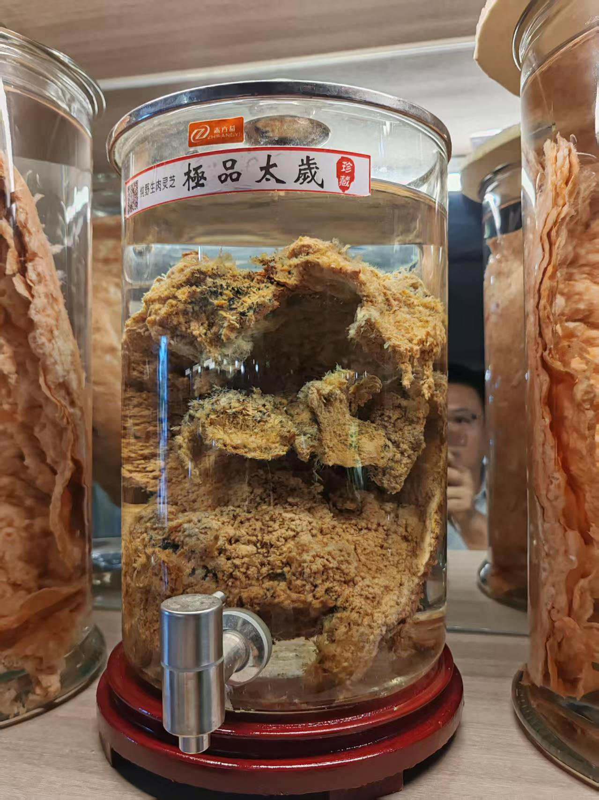

20260929太岁水，一直喝不下去
修炼修行风水布局
步步为营
每一步，都要用开水杀菌
这样就做好了，盖上保鲜膜，发酵
我做的是老酒

脑海里，
是何因缘，明知自己活不过百岁，却要立誓养他几千年
梦坛呓语故事
千年有约之
太岁
这是人参吧
[呲牙][呲牙][呲牙]
这是萝卜参
不过也十五六年了
一斤一

两多[憨笑][憨笑][憨笑]
红茶菌喝着还行
太岁水，一只喝不下去
喝了很多，没什么感觉
常年喝
刚才脑屏去看了一下我的太岁
是我几百年前学习修炼的一个老祖师
几百年后，有这机缘，再养他
再过若干年后，我从这太岁困体里，把他解救出来，
成就正果
老祖师咋投胎成菌类了[呲牙]
机缘，
也就是说，虽然历经千百年，并没有得道成仙
小心，被惩罚
不知者、好学者，无过。藏传佛教还经常辩论，老祖师也喜欢勤学好问的弟子
不是问题，是法身变了
凡所有相皆是虚妄。